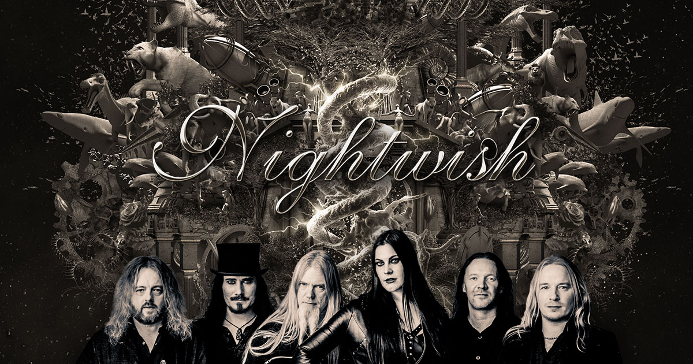
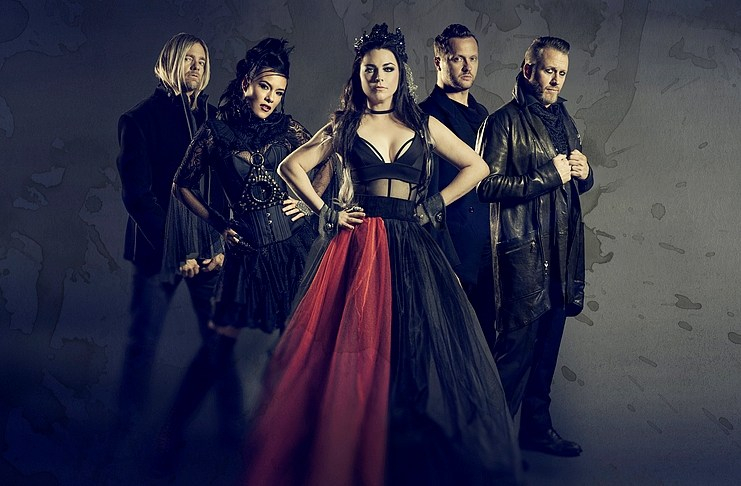
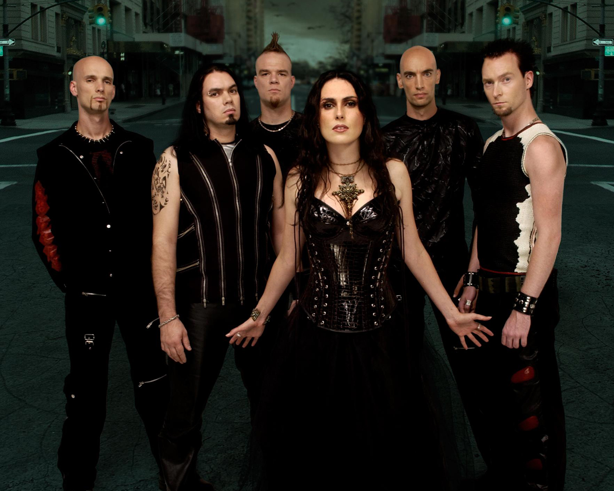
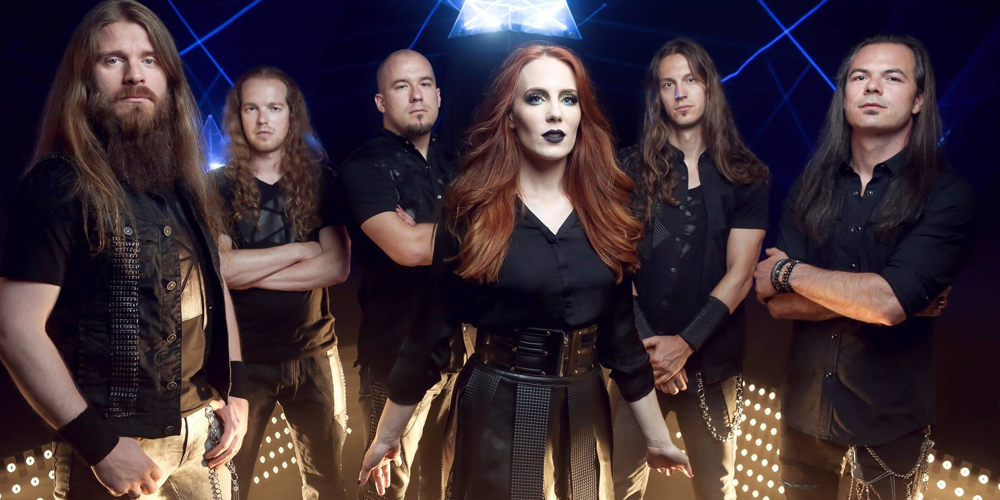
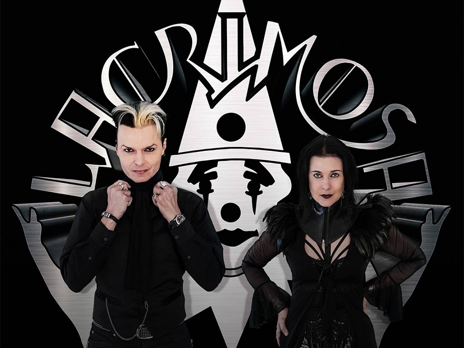
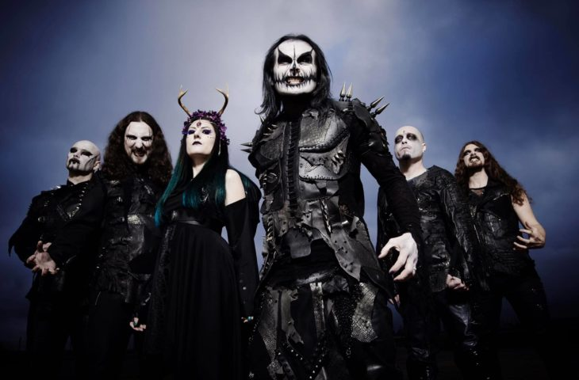

Bandas de Gothic Metal
Nightwish
 Nightwish é uma banda de metal progressivo oriunda dos Estados Unidos e formada em meados dos anos 80. Tornaram-se numa das bandas do movimento progressivo, desde o auge do rock progressivo em meados dos anos 70. A banda é conhecida por ter músicos de excelente capacidade de composição e execução que ganharam vários prêmios por revistas especializadas. Colaboram com vários outros músicos de renome. Por exemplo, John Petrucci foi nomeado como o terceiro guitarrista do G3, juntamente com Steve Vai e Joe Satriani, seguindo a trilha de guitarristas como Eric Johnson, Robert Fripp e Yngwie Malmsteen. A banda foi fundada em meados da década de 1980, por alunos da "Berklee College of Music". Inicialmente formado por John Petrucci (guitarra) e John Myung (baixo), que depois conheceram Mike Portnoy (bateria) e decidiram fundar uma banda. Posteriormente chamam o vocalista Chris Collins e o tecladista Kevin Moore para completarem o grupo. Antes de se chamarem Dream Theater, sugestão do pai de Mike e nome de uma sala de espetáculos na Califórnia, eram conhecidos por Majesty. Este nome surgiu durante um concerto do Rush, durante a sua turnê Power Windows. John Petrucci, John Myung e Mike Portnoy dormiram na rua para poderem comprar ingressos para assistir ao espetáculo e ao ouvirem a canção Bastille Day surge o comentário de que aquela música era majestosa, ficando assim o nome. Contudo, descobriu-se que já existia uma banda de jazz com o mesmo nome.
Evanescence
 Evanscence é uma banda americana de metal progressivo formada em Nova Jérsei em 1994 pelo guitarrista Michael Romeo. Nova Jérsei, abril de 1994. Aproveitando a boa recepção de sua demo The Dark Chapter, o guitarrista Michael Romeo resolveu montar uma banda. O primeiro membro a integrar-se foi o baixista Thomas Miller, com quem Michael já havia trabalhado nos últimos dez anos. A dupla então recrutou o baterista Jason Rullo, o vocalista Rod Tyler e o tecladista Michael Pinella. Gravaram seu primeiro álbum Symphony X entre os meses de agosto e setembro de 1994, sendo lançado no Japão em dezembro do mesmo ano.[1] No começo de 1995, o vocalista Rod Tyler abandonou a banda durante as gravações do segundo álbum, The Damnation Game. Russell Allen assume então os deveres vocais. Apenas oito meses após o álbum de estreia, o Symphony X lança seu segundo disco. Mantendo o ritmo de lançamentos, em novembro de 1996 é apresentado seu terceiro álbum The Divine Wings of Tragedy, considerado até então o mais bem sucedido, resultando no surgimento de grupos de fãs em parte da Europa e Japão. No final de 1997, pouco antes de iniciarem as gravações do quarto disco, o baterista Jason Rullo deixa a banda, sendo substituído por Thomas Walling. Após o lançamento de Twilight in Olympus (1998), o Symphony X realiza sua primeira apresentação no Japão, seguido de uma turnê na Europa. Thomas Wailing, o novo baterista, e Thomas Miller, baixista, não puderam excursionar pelo continente, resultando no retorno do baterista Jason Rullo. Ao voltarem para os Estados Unidos, foram feitas audiências para a escolha do substituto definitivo de Thomas Miller, e o escolhido foi Mike LePond. Também em 1998, um mês depois do lançamento de Twilight in Olympus, ocorreu o lançamento do álbum Prelude to the Millennium, uma coletânea reunindo os clássicos da banda. Em 1999 o Symphony X entra novamente em estúdio para gravar o próximo álbum, o conceitual V: The New Mythology Suite, lançado no ano seguinte.[2] Foi durante a turnê desse álbum que houve a gravação do primeiro disco ao vivo da banda, o duplo Live on the Edge of Forever, lançado em 2001. Realizam shows pela América do Sul, e em 2001 encabeçam duas vezes o festival ProgPower nos Estados Unidos, ao lado das bandas Pain of Salvation, Evergrey e Kamelot.[3] Em 2002 ocorreu o lançamento do épico The Odyssey, com sua faixa título de 24 minutos, baseada na obra Odisseia, de Homero.[4] Após The Odyssey, diversos membros da banda se envolvem em projetos paralelos e também lançam discos solo, caso de Enter by the Twelfth Gate, do tecladista Michael Pinnella, e Atomic Soul, do vocalista Russel Allen. Russel Allen também iniciou o supergrupo Allen-Lande com Magnus Karlsson (Primal Fear) e Jørn Lande (Masterplan). Em 2005 participam da Gigantour, evento idealizado por Dave Mustaine do Megadeth, onde participaram também as bandas Dream Theater, Anthrax e Nevermore. Mike Portnoy sugeriu a inclusão do Symphony X no festival, e a banda participou da turnê pela América do Norte entre os meses de julho e setembro de 2005.[5] Em 2006, o baixista Michael LePond realiza cirurgia para o tratamento da doença de Crohn. Após sua recuperação entram em estúdio para a gravação de seu sétimo disco, Paradise Lost, lançado em 26 de junho de 2007. O disco atingiu a posição 123 nas paradas da Billboard norte-americana. Foram gravados videoclipes para as músicas Serpent Kiss e Set the World on Fire. Segue-se uma longa turnê pelas Américas em 2007, turnê que se repete em 2008, passando também pela Europa, e finalizando com 5 datas na Ásia em fevereiro de 2009.
Within Temptation
 Within Temptation é uma banda estadunidense formada em 1982 em Hartford, Connecticut. O grupo é um dos fundadores do estilo que se convencionou chamar de metal progressivo. A origem do Fates Warning é controversa. Segundo o guitarrista Victor Arduini tudo começou quando ele e o baterista Steve Zimmermann decidiram montar uma banda. Zimmermann já havia tocado com o guitarrista Jim Matheos em outro grupo e o convidou a integrar o que viria a ser o Fates Warning. Entretanto, de acordo com Jim Matheos, ele os conheceu quando respondeu a um anúncio de "procura-se guitarrista" em uma revista local feito por Steve Zimmerman e Victor Arduini. Na fila de ingresso de um show do Black Sabbath o trio conheceu Joe DiBiase, que era cambista e ofereceu a eles ingressos para o show. Após uma rápida conversa o quarteto descobriu que tinham as mesmas influências e que Joe era baixista, e então o convidaram a participar da banda. Para completar o grupo foi chamado John Arch, conhecido de Victor Arduini, que era vocalista de uma banda cover do Iron Maiden. A banda começou tocando covers de Iron Maiden, Judas Priest, Black Sabbath, Accept, entre outras. Após alguns meses Jim Matheos propôs que começassem a escrever suas próprias músicas. O quinteto adotou o nome de Misfit (ideia de Joe DiBiase), que logo foi mudado para Fates Warning por sugestão do baterista Steve Zimmerman. Fates Warning é um trecho da canção "The Calling" de autoria da própria banda e que está presente no álbum "Night on Bröcken". Zimmerman achou o trecho marcante e sugeriu o nome aos seus colegas. O primeiro fruto do trabalho da banda foi a inclusão da música "Soldier Boy" na coletânea Metal Massacre 5 em 1984. Essa coletânea é famosa por ter revelado grandes nomes do metal como Metallica e Slayer, por exemplo.
Épica
 Épica é um dos projetos do multi-instrumentista holandês Arjen Anthony Lucassen, trabalho esse que conseguiu reunir muitos nomes renomados do metal para participarem de suas experiências musicais. O primeiro álbum do Ayreon foi The Final Experiment, lançado em 1995 e que conta a história de um homem da Bretanha do século VI. O menestrel Ayreon que, talvez por ser cego de nascença, possui um sexto sentido que o permite receber mensagens de cientistas do ano 2084, quando a humanidade quase se auto destruiu em uma última grande guerra. O álbum conta com treze cantores e sete músicos, a maioria holandeses. The Final Experiment é geralmente citado como um dos primeiros álbuns de ópera metal e um álbum que retoma a ópera rock. O nome original do álbum era Ayreon: The Final Experiment, com o artista sendo Arjen Anthony Lucassen, mas, após o relançamento, o título foi mudado para The Final Experiment, e o artista para Ayreon. Lançado em 1996, Actual Fantasy é o único álbum do Ayreon que não possui uma história contínua. Em Actual Fantasy cantam apenas três diferentes vozes e tocam seus instrumentos apenas três músicos. Temas inspirados pelas canções de Actual Fantasy podem ser encontrados em lançamentos posteriores do Ayreon, principalmente nos dois The Universal Migrator. O álbum Into the Electric Castle (1998) veio a seguir. O álbum duplo conta a história de oito pessoas de diferentes eras da humanidade, trancadas juntas em um estranho "lugar sem tempo e sem espaço". Ali, uma voz misteriosa fala com eles, guiando-os em sua perigosa missão para encontrar o caminho de casa através do "Castelo Elétrico". A história é contada em um rock psicodélico por oito cantores, cada um com um papel único, e onze músicos. O álbum duplo The Universal Migrator (2000) apresenta uma história de ficção científica sobre o último humano vivo, vivendo em uma colônia em Marte. Na história do primeiro álbum Universal Migrator Part 1: The Dream Sequencer, ele começa a voltar no tempo, para flashbacks de memórias de diferentes pessoas da história humana, memórias que ele aparentemente viveu em vidas passadas, usando um aparelha chamado "Seqüenciador de Sonhos". Esse primeiro álbum consiste em um rock progressivo leve e atmosférico. Mais tarde, ele "pré-encarna" em um tempo em um longínquo passado, antes do Big Bang no segundo álbum, mais pesado, chamado Universal Migrator Part 2: Flight of the Migrator. Mais uma vez, ambos os álbuns têm por volta de dez cantores e vários músicos. Um dos convidados para o álbum foi Bruce Dickinson do Iron Maiden, que fez sua participação na quinta faixa, "Into the Black Hole". O próximo lançamento do Ayreon foi The Human Equation, de 2004. Como em Into the Electric Castle, esse álbum contou com vários cantores, cada um em um papel. Com o álbum, o Ayreon deixa um pouco de lado sua temática de ficção científica e fantasia e apresenta uma história que se passa dentro da cabeça de um homem em estado de coma depois de sofrer um estranho acidente de carro. Suas emoções são personificadas e o levam a várias passagens de sua vida. Apesar do tema psicológico meio diferente, Arjen disse, em uma entrevista no DVD que ele quis fazer tudo relacionado com o mundo real. Depois de mudar da Transimission Records para a Inside Out Music, Arjen começou, em 2004, a lançar seus álbuns anteriores do Ayreon pela nova gravadora, com mudanças desde pequenas (The Universal Migrator lançado em um CD duplo, ao invés de dois CDs separados) até drásticas (Actual Fantasy "Revisited" teve toda sua bateria, baixo, flauta e sintetizadores gravados novamente). Em 2005, coincidindo com o décimo aniversário do Ayreon, The Final Experiment foi relançado com um disco bônus semi-acústico. No fim de setembro de 2006, depois de terminar seu novo disco, Arjen começou a trabalhar em um novo álbum do Ayreon. O sétimo álbum do Ayreon, 01011001 conta com a participação de dezessete vocalistas, entre eles Floor Jansen e Anneke van Giersbergen, que já participaram em outros álbuns do grupo. "01011001" é o número binário do número 89, que é o código ASCII da letra Y. A obra se passa no "Planet Y" (Planeta Y) e a história de "Forever of the Stars" que aparece em Into the Electric Castle, The Universal Migrator e The Human Equation, volta a aparecer.
Lacrimosa
 Lacrimosa é uma banda brasileira de power metal, formada na cidade de São Paulo em 1991, pelo vocalista, tecladista e multi-instrumentista Andre Matos e os guitarristas Rafael Bittencourt e André Linhares, após se conhecerem na Faculdade Santa Marcelina, onde cursavam composição e regência. Andre Matos havia feito parte do Viper (entre 1985 e 1990) e Rafael Bittencourt fazia parte da banda Spitfire. Após a formação inicial da banda, entraram os músicos Luis Mariutti (baixo) e Marco Antunes (bateria), e André Linhares cedeu lugar a Kiko Loureiro. Apenas os guitarristas Rafael Bittencourt e Kiko Loureiro foram os únicos integrantes a tocarem em todos os álbuns da banda. O Angra já vendeu aproximadamente mais de 5 milhões de cópias pelo mundo. A banda Angra foi formada por Rafael Bittencourt e Andre Matos com a proposta de fundir a agressividade do heavy metal, os ritmos étnicos brasileiros e a sofisticação da música erudita. O nome significa "deusa do fogo e da beleza" na mitologia tupiniquim, além de significar uma pequena enseada ou baía usada como porto natural (como em Angra dos Reis). Além disso, também foi escolhido por se parecer com o adjetivo angry, que, em inglês, significa "raivoso". Na época, Andre Matos foi quem trouxe os contatos com o empresário Antônio Pirani, então proprietário da revista Rock Brigade e do selo Rock Brigade Records, por volta de 1991 no auge do estilo power metal. Rafael, que estava retornando dos Estados Unidos, resolveu montar uma super banda com músicos conhecidos na Faculdade Santa Marcelina como o vocalista Andre Matos. Os músicos André Linhares (guitarra), Luis Mariutti (baixo), e Marco Antunes (bateria) completaram a banda, mas após algum tempo André Linhares deixou a banda e André Hernandes o substituiu. Pouco depois, Kiko Loureiro assumiu o lugar de André Hernandes. A ideia era aproveitar a onda do power metal (ou metal melódico como o gênero ficou conhecido no Brasil) que estava bastante popular na Europa, Japão e no Brasil graças a nomes como Helloween e Gamma Ray. Andre Matos, vocalista original da banda. O quinteto ensaiou praticamente por um ano para lançar sua primeira demo tape, intitulada Reaching Horizons em 1992. Ainda desconhecidos do grande público, o Angra assinou com a JVC e viajou para a Alemanha para gravar seu primeiro álbum de estúdio. Antes das gravações iniciarem, Marco Antunes deixa o grupo, ficando a cargo de Alex Holzwarth tocar a bateria no disco. O primeiro show da banda foi dia 17 de Abril de 1993 no Black Jack em São Paulo. O tecladista foi Fábio Ribeiro, que fez alguns shows e depois saiu para trabalhar na Korg. Entrou então Leck Filho. No fim de 1993 foi lançado o disco de estreia, Angels Cry, que contava com a participação de Kai Hansen, Dirk Schlachter, Thomas Nack (Gamma Ray) e Sascha Paeth (Heavens Gate). O álbum apresentava uma mistura de heavy metal e música clássica, sonoridade que marcou o estilo da banda.[5] Após o lançamento a banda ganhou fama no Japão, onde Angels Cry chegou à terceira posição na parada internacional, tendo vendido 106 mil cópias, ganhando seu primeiro Disco de Ouro.[6] Leitores de revistas japonesas e sul-americanas elegeram o Angra "Melhor Banda Nova" de 1993, sendo que, na Rock Brigade, o grupo (e Angels Cry) venceu diversas categorias da votação dos leitores: "Melhor Álbum", "Melhor Vocalista", "Melhor Capa", "Melhor Tecladista" e "Melhor Música" (Carry On). O videoclipe de "Time" foi executado muitas vezes em emissoras de TV do Brasil e do Japão, enquanto que o de "Carry On" foi indicado para o MTV Video Music Awards.
Cradle of Filth
 Cradle of Filth é uma banda de metal progressivo de Estocolmo. A banda passou por várias mudanças de formação, mas Mikael Åkerfeldt, vocalista, guitarrista e compositor, permaneceu nela desde que entrou imediatamente após a sua criação em 1990. Seu estilo é enraizado no death metal escandinavo, mas o Opeth tem consistentemente incorporado influências de folk, jazz e blues dentro de suas composições geralmente longas. Muitas composições incluem interlúdios de violão e fortes dinâmicas, bem como ambos vocais gutural e limpo. A banda lançou seu álbum de estreia, Orchid, em 1995. Realizaram sua primeira turnê mundial após o lançamento de Blackwater Park (2001). Seu oitavo álbum de estúdio, Ghost Reveries (2005), foi bastante popular nos Estados Unidos, mas o grupo não experimentou o sucesso comercial americano até o lançamento de seu nono álbum de estúdio, Watershed (2008), que chegou ao 23.º lugar no top 200 da revista Billboard, e liderou as paradas de álbuns da Finlândia na sua primeira semana de lançamento. O Opeth foi formado como uma banda de death metal no outono de 1990 em Estocolmo, Suécia, pelo vocalista David Isberg.[1] Isberg convidou o ex-membro da banda Eruption, Mikael Åkerfeldt, para reunir-se à banda em sessões de música como baixista, mas não avisou os outros membros, inclusive o então baixista da banda. Como resultado, todos os membros da banda saíram exceto por Isberg, e Åkerfeldt logo oficializou o convite após o fim de sua banda.[1] O nome da banda foi derivado da palavra "Opet", pega do livro de Wilbur Smith, The Sunbird.[2] No livro, Opet é o nome de uma fictícia cidade fenícia na África do Sul, cujo nome é traduzido como "Cidade da Lua" no livro; o nome pode ser uma referência ao Opet Festival ou a deusa egípcia Taweret, também conhecida como Opet. Com Åkerfeldt na guitarra e David Isberg no vocal, o Opeth ainda estava precisando de outros membros. Para isso reuniram o antigo baterista do Eruption e amigo de Åkerfeldt, Anders Nordin, além de Nick Döring no baixo. Andreas Dimeo foi recrutado posteriormente como segundo guitarrista. Insatisfeito com o lento progresso do Opeth, Döring e Dimeo saíram da banda após sua primeira apresentação,[3] e foram substituídos pelo guitarrista Kim Pettersson e pelo baixista Johan DeFarfalla. Depois do show seguinte, DeFarfalla deixou o Opeth para passar um tempo com sua namorada na Alemanha, e foi substituído pelo amigo de Åkerfeldt, o baixista Peter Lindgren. O guitarrista solo, Pettersson, saiu depois da próxima apresentação da banda e Lindgren trocou para a guitarra. Por causa de diferenças criativas e com isso ter perdido o interesse na banda, Isberg saiu em 1992. Com três membros na banda, Åkerfeldt assumiu o vocal e o trio passou o próximo ano compondo e ensaiando o novo material. O grupo começou a depender menos da metranca e da agressão típica do death metal, e incorporou violões e harmonias de guitarras dentro de sua música; desenvolveram o núcleo do som do Opeth. Stefan Guteklint entrou para o baixo em 1993, mas foi demitido pela banda depois de assinar seu primeiro contrato de gravação com a Candlelight em 1994. A banda inicialmente empregou o ex-membro DeFarfalla como um baixista das sessões de gravação, e ele passou a juntar-se numa base de tempo integral após o lançamento do álbum de estreia do Opeth em 1995.
- Comentários (45)
- Sugestões (12)
- CONTATO : Clique Aqui
- Pagina Inicial : Clique Aqui